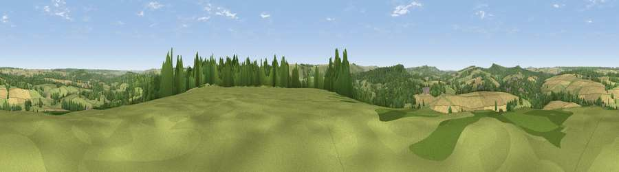

Castle Ditches
#18181 in England · top 26% of its area beats it · near SwallowcliffeThe view, rendered

A 360° render of this exact spot computed from the terrain model, tree cover and land cover — summer colours, afternoon light, calibrated against photographs of famous viewpoints. Real trees, hedges and buildings will differ in detail.
The panorama
Grey silhouette: terrain skyline in each direction (720 bearings, Earth curvature and refraction included). Dashed green: skyline with trees (+15 m) and buildings (+8 m) as obstacles. Blue strip: how far the ground is visible on each bearing.
Where the view opens
Wedge length = distance to the farthest visible ground on that bearing (vegetation-aware). Rings at 10, 25 and 50 km.
What fills the view
51% grassland · 27% woodland · 22% cropland ·
Angular shares of the visible panorama (visual magnitude), not map area. Landscape diversity 0.46 (0–1 Shannon).
Key numbers
More beautiful places nearby
The staircase of upgrades: each row has a higher view potential than everything closer. Driving times are estimates from straight-line distance, calibrated against real road routing — check an actual route before setting out.
| Place | Direction | Drive | Score |
|---|---|---|---|
| Swallowcliffe Down | S · 3 km | ~7 min | 59.8 |
| Ansty Down | SSW · 4 km | ~9 min | 61.6 |
| Viewpoint near Fonthill Gifford | WNW · 5 km | ~12 min | 64.2 |
| Trow Down | S · 7 km | ~14 min | 67.5 |
| Monk's Down | SSW · 8 km | ~16 min | 74.4 |
| Viewpoint near Berwick St John | SSW · 9 km | ~17 min | 78.2 |
| Viewpoint near Kimmeridge | S · 47 km | ~67 min | 82.9 |
| Viewpoint near Kimmeridge | S · 47 km | ~68 min | 84.1 |
51.05578, -2.05496 · source: osm peak · position refined by local search. Computed location — check access rights before visiting.